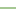

<!doctype html>
<html lang="en">
    <head>
        <meta charset="utf-8">
        <meta http-equiv="X-UA-Compatible" content="IE=edge">
        <meta name="viewport" content="initial-scale=1,user-scalable=no,maximum-scale=1,width=device-width">
        <meta name="mobile-web-app-capable" content="yes">
        <meta name="apple-mobile-web-app-capable" content="yes">
        <link rel="stylesheet" href="css/leaflet.css"><link rel="stylesheet" href="css/L.Control.Locate.min.css">
        <link rel="stylesheet" href="css/qgis2web.css"><link rel="stylesheet" href="css/fontawesome-all.min.css">
        <link rel="stylesheet" href="css/leaflet-search.css">
        <link rel="stylesheet" href="css/filter.css">
<link rel="stylesheet" href="css/nouislider.min.css">
        <link rel="stylesheet" href="css/leaflet-control-geocoder.Geocoder.css">
        <link rel="stylesheet" href="css/leaflet-measure.css">
        <style>
        html, body, #map {
            width: 100%;
            height: 100%;
            padding: 0;
            margin: 0;
        }
        </style>
        <title>Cartographie du Parc Natinal des Pyrenées</title>
    </head>
    <body>
        <div id="map">
        </div>
        <script src="js/qgis2web_expressions.js"></script>
        <script src="js/leaflet.js"></script><script src="js/L.Control.Locate.min.js"></script>
        <script src="js/leaflet-svg-shape-markers.min.js"></script>
        <script src="js/leaflet.rotatedMarker.js"></script>
        <script src="js/leaflet.pattern.js"></script>
        <script src="js/leaflet-hash.js"></script>
        <script src="js/Autolinker.min.js"></script>
        <script src="js/rbush.min.js"></script>
        <script src="js/labelgun.min.js"></script>
        <script src="js/labels.js"></script>
        <script src="js/leaflet-control-geocoder.Geocoder.js"></script>
        <script src="js/leaflet-measure.js"></script>
        <script src="js/leaflet-search.js"></script>
        <script src="js/tailDT.js"></script>
<script src="js/nouislider.min.js"></script>
<script src="js/wNumb.js"></script>
        <script src="data/PNP_plans_eau_1.js"></script>
        <script src="data/PNP_sentiers_2.js"></script>
        <script src="data/PNP_zone_optimale_adhesion_3.js"></script>
        <script src="data/PNP_zone_coeur_4.js"></script>
        <script src="data/PNP_zone_adhesion_5.js"></script>
        <script src="data/PNP_secteurs_6.js"></script>
        <script src="data/PNP_limites_parc_toutes_zones_7.js"></script>
        <script src="data/Refuges_8.js"></script>
        <script src="data/Maisonsduparc_9.js"></script>
        <script>
        var map = L.map('map', {
            zoomControl:true, maxZoom:28, minZoom:1
        }).fitBounds([[42.53060771350097,-0.6279608095935891],[43.19648927878224,0.2832455428965692]]);
        var hash = new L.Hash(map);
        map.attributionControl.setPrefix('<a href="https://github.com/tomchadwin/qgis2web" target="_blank">qgis2web</a> &middot; <a href="https://leafletjs.com" title="A JS library for interactive maps">Leaflet</a> &middot; <a href="https://qgis.org">QGIS</a>');
        var autolinker = new Autolinker({truncate: {length: 30, location: 'smart'}});
        L.control.locate({locateOptions: {maxZoom: 19}}).addTo(map);
        var measureControl = new L.Control.Measure({
            position: 'topleft',
            primaryLengthUnit: 'meters',
            secondaryLengthUnit: 'kilometers',
            primaryAreaUnit: 'sqmeters',
            secondaryAreaUnit: 'hectares'
        });
        measureControl.addTo(map);
        document.getElementsByClassName('leaflet-control-measure-toggle')[0]
        .innerHTML = '';
        document.getElementsByClassName('leaflet-control-measure-toggle')[0]
        .className += ' fas fa-ruler';
        var bounds_group = new L.featureGroup([]);
        function setBounds() {
        }
        map.createPane('pane_OSMStandard_0');
        map.getPane('pane_OSMStandard_0').style.zIndex = 400;
        var layer_OSMStandard_0 = L.tileLayer('http://tile.openstreetmap.org/{z}/{x}/{y}.png', {
            pane: 'pane_OSMStandard_0',
            opacity: 0.6,
            attribution: '<a href="https://www.openstreetmap.org/copyright">© OpenStreetMap contributors, CC-BY-SA</a>',
            minZoom: 1,
            maxZoom: 28,
            minNativeZoom: 0,
            maxNativeZoom: 19
        });
        layer_OSMStandard_0;
        map.addLayer(layer_OSMStandard_0);
        function pop_PNP_plans_eau_1(feature, layer) {
            var popupContent = '<table>\
                    <tr>\
                        <td colspan="2">' + (feature.properties['ID'] !== null ? autolinker.link(feature.properties['ID'].toLocaleString()) : '') + '</td>\
                    </tr>\
                    <tr>\
                        <td colspan="2">' + (feature.properties['NATURE'] !== null ? autolinker.link(feature.properties['NATURE'].toLocaleString()) : '') + '</td>\
                    </tr>\
                    <tr>\
                        <td colspan="2">' + (feature.properties['TOPONYME'] !== null ? autolinker.link(feature.properties['TOPONYME'].toLocaleString()) : '') + '</td>\
                    </tr>\
                    <tr>\
                        <td colspan="2">' + (feature.properties['SUPERFICIE'] !== null ? autolinker.link(feature.properties['SUPERFICIE'].toLocaleString()) : '') + '</td>\
                    </tr>\
                    <tr>\
                        <td colspan="2">' + (feature.properties['area_ha'] !== null ? autolinker.link(feature.properties['area_ha'].toLocaleString()) : '') + '</td>\
                    </tr>\
                </table>';
            layer.bindPopup(popupContent, {maxHeight: 400});
        }

        function style_PNP_plans_eau_1_0() {
            return {
                pane: 'pane_PNP_plans_eau_1',
                opacity: 1,
                color: 'rgba(35,35,35,1.0)',
                dashArray: '',
                lineCap: 'butt',
                lineJoin: 'miter',
                weight: 1.0, 
                fill: true,
                fillOpacity: 1,
                fillColor: 'rgba(114,155,111,1.0)',
                interactive: true,
            }
        }
        map.createPane('pane_PNP_plans_eau_1');
        map.getPane('pane_PNP_plans_eau_1').style.zIndex = 401;
        map.getPane('pane_PNP_plans_eau_1').style['mix-blend-mode'] = 'normal';
        var layer_PNP_plans_eau_1 = new L.geoJson(json_PNP_plans_eau_1, {
            attribution: '',
            interactive: true,
            dataVar: 'json_PNP_plans_eau_1',
            layerName: 'layer_PNP_plans_eau_1',
            pane: 'pane_PNP_plans_eau_1',
            onEachFeature: pop_PNP_plans_eau_1,
            style: style_PNP_plans_eau_1_0,
        });
        bounds_group.addLayer(layer_PNP_plans_eau_1);
        map.addLayer(layer_PNP_plans_eau_1);
        function pop_PNP_sentiers_2(feature, layer) {
            var popupContent = '<table>\
                    <tr>\
                        <td colspan="2">' + (feature.properties['IDPNP'] !== null ? autolinker.link(feature.properties['IDPNP'].toLocaleString()) : '') + '</td>\
                    </tr>\
                </table>';
            layer.bindPopup(popupContent, {maxHeight: 400});
        }

        function style_PNP_sentiers_2_0() {
            return {
                pane: 'pane_PNP_sentiers_2',
                opacity: 1,
                color: 'rgba(133,182,111,1.0)',
                dashArray: '',
                lineCap: 'square',
                lineJoin: 'bevel',
                weight: 1.0,
                fillOpacity: 0,
                interactive: true,
            }
        }
        map.createPane('pane_PNP_sentiers_2');
        map.getPane('pane_PNP_sentiers_2').style.zIndex = 402;
        map.getPane('pane_PNP_sentiers_2').style['mix-blend-mode'] = 'normal';
        var layer_PNP_sentiers_2 = new L.geoJson(json_PNP_sentiers_2, {
            attribution: '',
            interactive: true,
            dataVar: 'json_PNP_sentiers_2',
            layerName: 'layer_PNP_sentiers_2',
            pane: 'pane_PNP_sentiers_2',
            onEachFeature: pop_PNP_sentiers_2,
            style: style_PNP_sentiers_2_0,
        });
        bounds_group.addLayer(layer_PNP_sentiers_2);
        map.addLayer(layer_PNP_sentiers_2);
        function pop_PNP_zone_optimale_adhesion_3(feature, layer) {
            var popupContent = '<table>\
                    <tr>\
                        <td colspan="2">' + (feature.properties['ID'] !== null ? autolinker.link(feature.properties['ID'].toLocaleString()) : '') + '</td>\
                    </tr>\
                    <tr>\
                        <td colspan="2">' + (feature.properties['Libellé'] !== null ? autolinker.link(feature.properties['Libellé'].toLocaleString()) : '') + '</td>\
                    </tr>\
                </table>';
            layer.bindPopup(popupContent, {maxHeight: 400});
        }

        function style_PNP_zone_optimale_adhesion_3_0() {
            return {
                pane: 'pane_PNP_zone_optimale_adhesion_3',
                opacity: 1,
                color: 'rgba(35,35,35,1.0)',
                dashArray: '',
                lineCap: 'butt',
                lineJoin: 'miter',
                weight: 1.0, 
                fill: true,
                fillOpacity: 1,
                fillColor: 'rgba(218,132,33,0.7019607843137254)',
                interactive: true,
            }
        }
        map.createPane('pane_PNP_zone_optimale_adhesion_3');
        map.getPane('pane_PNP_zone_optimale_adhesion_3').style.zIndex = 403;
        map.getPane('pane_PNP_zone_optimale_adhesion_3').style['mix-blend-mode'] = 'normal';
        var layer_PNP_zone_optimale_adhesion_3 = new L.geoJson(json_PNP_zone_optimale_adhesion_3, {
            attribution: '',
            interactive: true,
            dataVar: 'json_PNP_zone_optimale_adhesion_3',
            layerName: 'layer_PNP_zone_optimale_adhesion_3',
            pane: 'pane_PNP_zone_optimale_adhesion_3',
            onEachFeature: pop_PNP_zone_optimale_adhesion_3,
            style: style_PNP_zone_optimale_adhesion_3_0,
        });
        bounds_group.addLayer(layer_PNP_zone_optimale_adhesion_3);
        map.addLayer(layer_PNP_zone_optimale_adhesion_3);
        function pop_PNP_zone_coeur_4(feature, layer) {
            var popupContent = '<table>\
                    <tr>\
                        <td colspan="2">' + (feature.properties['id'] !== null ? autolinker.link(feature.properties['id'].toLocaleString()) : '') + '</td>\
                    </tr>\
                    <tr>\
                        <td colspan="2">' + (feature.properties['nom'] !== null ? autolinker.link(feature.properties['nom'].toLocaleString()) : '') + '</td>\
                    </tr>\
                </table>';
            layer.bindPopup(popupContent, {maxHeight: 400});
        }

        function style_PNP_zone_coeur_4_0() {
            return {
                pane: 'pane_PNP_zone_coeur_4',
                opacity: 1,
                color: 'rgba(35,35,35,1.0)',
                dashArray: '',
                lineCap: 'butt',
                lineJoin: 'miter',
                weight: 1.0, 
                fill: true,
                fillOpacity: 1,
                fillColor: 'rgba(227,26,28,0.4823529411764706)',
                interactive: true,
            }
        }
        map.createPane('pane_PNP_zone_coeur_4');
        map.getPane('pane_PNP_zone_coeur_4').style.zIndex = 404;
        map.getPane('pane_PNP_zone_coeur_4').style['mix-blend-mode'] = 'normal';
        var layer_PNP_zone_coeur_4 = new L.geoJson(json_PNP_zone_coeur_4, {
            attribution: '',
            interactive: true,
            dataVar: 'json_PNP_zone_coeur_4',
            layerName: 'layer_PNP_zone_coeur_4',
            pane: 'pane_PNP_zone_coeur_4',
            onEachFeature: pop_PNP_zone_coeur_4,
            style: style_PNP_zone_coeur_4_0,
        });
        bounds_group.addLayer(layer_PNP_zone_coeur_4);
        map.addLayer(layer_PNP_zone_coeur_4);
        function pop_PNP_zone_adhesion_5(feature, layer) {
            var popupContent = '<table>\
                    <tr>\
                        <td colspan="2">' + (feature.properties['id'] !== null ? autolinker.link(feature.properties['id'].toLocaleString()) : '') + '</td>\
                    </tr>\
                    <tr>\
                        <td colspan="2">' + (feature.properties['nom'] !== null ? autolinker.link(feature.properties['nom'].toLocaleString()) : '') + '</td>\
                    </tr>\
                </table>';
            layer.bindPopup(popupContent, {maxHeight: 400});
        }

        function style_PNP_zone_adhesion_5_0() {
            return {
                pane: 'pane_PNP_zone_adhesion_5',
                opacity: 1,
                color: 'rgba(35,35,35,1.0)',
                dashArray: '',
                lineCap: 'butt',
                lineJoin: 'miter',
                weight: 1.0, 
                fill: true,
                fillOpacity: 1,
                fillColor: 'rgba(27,145,50,0.7450980392156863)',
                interactive: true,
            }
        }
        map.createPane('pane_PNP_zone_adhesion_5');
        map.getPane('pane_PNP_zone_adhesion_5').style.zIndex = 405;
        map.getPane('pane_PNP_zone_adhesion_5').style['mix-blend-mode'] = 'normal';
        var layer_PNP_zone_adhesion_5 = new L.geoJson(json_PNP_zone_adhesion_5, {
            attribution: '',
            interactive: true,
            dataVar: 'json_PNP_zone_adhesion_5',
            layerName: 'layer_PNP_zone_adhesion_5',
            pane: 'pane_PNP_zone_adhesion_5',
            onEachFeature: pop_PNP_zone_adhesion_5,
            style: style_PNP_zone_adhesion_5_0,
        });
        bounds_group.addLayer(layer_PNP_zone_adhesion_5);
        map.addLayer(layer_PNP_zone_adhesion_5);
        function pop_PNP_secteurs_6(feature, layer) {
            var popupContent = '<table>\
                    <tr>\
                        <td colspan="2">' + (feature.properties['Nom'] !== null ? autolinker.link(feature.properties['Nom'].toLocaleString()) : '') + '</td>\
                    </tr>\
                </table>';
            layer.bindPopup(popupContent, {maxHeight: 400});
        }

        function style_PNP_secteurs_6_0() {
            return {
                pane: 'pane_PNP_secteurs_6',
                opacity: 1,
                color: 'rgba(229,229,11,0.9098039215686274)',
                dashArray: '',
                lineCap: 'butt',
                lineJoin: 'miter',
                weight: 1.0, 
                fill: true,
                fillOpacity: 1,
                fillColor: 'rgba(164,113,88,0.0)',
                interactive: true,
            }
        }
        map.createPane('pane_PNP_secteurs_6');
        map.getPane('pane_PNP_secteurs_6').style.zIndex = 406;
        map.getPane('pane_PNP_secteurs_6').style['mix-blend-mode'] = 'normal';
        var layer_PNP_secteurs_6 = new L.geoJson(json_PNP_secteurs_6, {
            attribution: '',
            interactive: true,
            dataVar: 'json_PNP_secteurs_6',
            layerName: 'layer_PNP_secteurs_6',
            pane: 'pane_PNP_secteurs_6',
            onEachFeature: pop_PNP_secteurs_6,
            style: style_PNP_secteurs_6_0,
        });
        bounds_group.addLayer(layer_PNP_secteurs_6);
        map.addLayer(layer_PNP_secteurs_6);
        function pop_PNP_limites_parc_toutes_zones_7(feature, layer) {
            var popupContent = '<table>\
                    <tr>\
                        <td colspan="2">' + (feature.properties['id'] !== null ? autolinker.link(feature.properties['id'].toLocaleString()) : '') + '</td>\
                    </tr>\
                    <tr>\
                        <td colspan="2">' + (feature.properties['nom'] !== null ? autolinker.link(feature.properties['nom'].toLocaleString()) : '') + '</td>\
                    </tr>\
                </table>';
            layer.bindPopup(popupContent, {maxHeight: 400});
        }

        function style_PNP_limites_parc_toutes_zones_7_0() {
            return {
                pane: 'pane_PNP_limites_parc_toutes_zones_7',
                opacity: 1,
                color: 'rgba(196,60,57,1.0)',
                dashArray: '',
                lineCap: 'square',
                lineJoin: 'bevel',
                weight: 1.0,
                fillOpacity: 0,
                interactive: true,
            }
        }
        map.createPane('pane_PNP_limites_parc_toutes_zones_7');
        map.getPane('pane_PNP_limites_parc_toutes_zones_7').style.zIndex = 407;
        map.getPane('pane_PNP_limites_parc_toutes_zones_7').style['mix-blend-mode'] = 'normal';
        var layer_PNP_limites_parc_toutes_zones_7 = new L.geoJson(json_PNP_limites_parc_toutes_zones_7, {
            attribution: '',
            interactive: true,
            dataVar: 'json_PNP_limites_parc_toutes_zones_7',
            layerName: 'layer_PNP_limites_parc_toutes_zones_7',
            pane: 'pane_PNP_limites_parc_toutes_zones_7',
            onEachFeature: pop_PNP_limites_parc_toutes_zones_7,
            style: style_PNP_limites_parc_toutes_zones_7_0,
        });
        bounds_group.addLayer(layer_PNP_limites_parc_toutes_zones_7);
        map.addLayer(layer_PNP_limites_parc_toutes_zones_7);
        function pop_Refuges_8(feature, layer) {
            var popupContent = '<table>\
                    <tr>\
                        <td colspan="2"><strong>Type</strong><br />' + (feature.properties['Type'] !== null ? autolinker.link(feature.properties['Type'].toLocaleString()) : '') + '</td>\
                    </tr>\
                    <tr>\
                        <td colspan="2"><strong>Refuges</strong><br />' + (feature.properties['Propriete'] !== null ? autolinker.link(feature.properties['Propriete'].toLocaleString()) : '') + '</td>\
                    </tr>\
                    <tr>\
                        <td colspan="2"><strong>Nom</strong><br />' + (feature.properties['Nom'] !== null ? autolinker.link(feature.properties['Nom'].toLocaleString()) : '') + '</td>\
                    </tr>\
                </table>';
            layer.bindPopup(popupContent, {maxHeight: 400});
        }

        function style_Refuges_8_0() {
            return {
                pane: 'pane_Refuges_8',
                shape: 'diamond',
                radius: 4.8,
                opacity: 1,
                color: 'rgba(61,128,53,1.0)',
                dashArray: '',
                lineCap: 'butt',
                lineJoin: 'miter',
                weight: 2.0,
                fill: true,
                fillOpacity: 1,
                fillColor: 'rgba(15,255,251,1.0)',
                interactive: true,
            }
        }
        map.createPane('pane_Refuges_8');
        map.getPane('pane_Refuges_8').style.zIndex = 408;
        map.getPane('pane_Refuges_8').style['mix-blend-mode'] = 'normal';
        var layer_Refuges_8 = new L.geoJson(json_Refuges_8, {
            attribution: '',
            interactive: true,
            dataVar: 'json_Refuges_8',
            layerName: 'layer_Refuges_8',
            pane: 'pane_Refuges_8',
            onEachFeature: pop_Refuges_8,
            pointToLayer: function (feature, latlng) {
                var context = {
                    feature: feature,
                    variables: {}
                };
                return L.shapeMarker(latlng, style_Refuges_8_0(feature));
            },
        });
        bounds_group.addLayer(layer_Refuges_8);
        map.addLayer(layer_Refuges_8);
        function pop_Maisonsduparc_9(feature, layer) {
            var popupContent = '<table>\
                    <tr>\
                        <td colspan="2"><strong>Maison du parc</strong><br />' + (feature.properties['Nom'] !== null ? autolinker.link(feature.properties['Nom'].toLocaleString()) : '') + '</td>\
                    </tr>\
                </table>';
            layer.bindPopup(popupContent, {maxHeight: 400});
        }

        function style_Maisonsduparc_9_0() {
            return {
                pane: 'pane_Maisonsduparc_9',
                shape: 'triangle',
                radius: 4.4,
                opacity: 1,
                color: 'rgba(50,87,128,1.0)',
                dashArray: '',
                lineCap: 'butt',
                lineJoin: 'miter',
                weight: 2.0,
                fill: true,
                fillOpacity: 1,
                fillColor: 'rgba(250,250,8,1.0)',
                interactive: true,
            }
        }
        map.createPane('pane_Maisonsduparc_9');
        map.getPane('pane_Maisonsduparc_9').style.zIndex = 409;
        map.getPane('pane_Maisonsduparc_9').style['mix-blend-mode'] = 'normal';
        var layer_Maisonsduparc_9 = new L.geoJson(json_Maisonsduparc_9, {
            attribution: '',
            interactive: true,
            dataVar: 'json_Maisonsduparc_9',
            layerName: 'layer_Maisonsduparc_9',
            pane: 'pane_Maisonsduparc_9',
            onEachFeature: pop_Maisonsduparc_9,
            pointToLayer: function (feature, latlng) {
                var context = {
                    feature: feature,
                    variables: {}
                };
                return L.shapeMarker(latlng, style_Maisonsduparc_9_0(feature));
            },
        });
        bounds_group.addLayer(layer_Maisonsduparc_9);
        map.addLayer(layer_Maisonsduparc_9);
            var title = new L.Control();
            title.onAdd = function (map) {
                this._div = L.DomUtil.create('div', 'info');
                this.update();
                return this._div;
            };
            title.update = function () {
                this._div.innerHTML = '<h2>Cartographie du Parc Natinal des Pyrenées</h2>';
            };
            title.addTo(map);
        var osmGeocoder = new L.Control.Geocoder({
            collapsed: true,
            position: 'topleft',
            text: 'Search',
            title: 'Testing'
        }).addTo(map);
        document.getElementsByClassName('leaflet-control-geocoder-icon')[0]
        .className += ' fa fa-search';
        document.getElementsByClassName('leaflet-control-geocoder-icon')[0]
        .title += 'Search for a place';
        var baseMaps = {};
        L.control.layers(baseMaps,{' Maisons du parc': layer_Maisonsduparc_9,' Refuges': layer_Refuges_8,' PNP_limites_parc_toutes_zones': layer_PNP_limites_parc_toutes_zones_7,' PNP_secteurs': layer_PNP_secteurs_6,' PNP_zone_adhesion': layer_PNP_zone_adhesion_5,' PNP_zone_coeur': layer_PNP_zone_coeur_4,' PNP_zone_optimale_adhesion': layer_PNP_zone_optimale_adhesion_3,' PNP_sentiers': layer_PNP_sentiers_2,' PNP_plans_eau': layer_PNP_plans_eau_1,"OSM Standard": layer_OSMStandard_0,},{collapsed:false}).addTo(map);
        setBounds();
        map.addControl(new L.Control.Search({
            layer: layer_Refuges_8,
            initial: false,
            hideMarkerOnCollapse: true,
            propertyName: 'Nom'}));
        document.getElementsByClassName('search-button')[0].className +=
         ' fa fa-binoculars';
        var mapDiv = document.getElementById('map');
        var row = document.createElement('div');
        row.className="row";
        row.id="all";
        row.style.height = "100%";
        var col1 = document.createElement('div');
        col1.className="col9";
        col1.id = "mapWindow";
        col1.style.height = "99%";
        col1.style.width = "80%";
        col1.style.display = "inline-block";
        var col2 = document.createElement('div');
        col2.className="col3";
        col2.id = "menu";
        col2.style.display = "inline-block";
        mapDiv.parentNode.insertBefore(row, mapDiv);
        document.getElementById("all").appendChild(col1);
        document.getElementById("all").appendChild(col2);
        col1.appendChild(mapDiv)
        var Filters = {"TOPONYME": "str"};
        function filterFunc() {
          map.eachLayer(function(lyr){
          if ("options" in lyr && "dataVar" in lyr["options"]){
            features = this[lyr["options"]["dataVar"]].features.slice(0);
            try{
              for (key in Filters){
                keyS = key.replace(/[^a-zA-Z0-9_]/g, "")
                if (Filters[key] == "str" || Filters[key] == "bool"){
                  var selection = [];
                  var options = document.getElementById("sel_" + keyS).options
                  for (var i=0; i < options.length; i++) {
                    if (options[i].selected) selection.push(options[i].value);
                  }
                    try{
                      if (key in features[0].properties){
                        for (i = features.length - 1;
                          i >= 0; --i){
                          if (selection.indexOf(
                          features[i].properties[key])<0
                          && selection.length>0) {
                          features.splice(i,1);
                          }
                        }
                      }
                    } catch(err){
                  }
                }
                if (Filters[key] == "int"){
                  sliderVals =  document.getElementById(
                    "div_" + keyS).noUiSlider.get();
                  try{
                    if (key in features[0].properties){
                    for (i = features.length - 1; i >= 0; --i){
                      if (parseInt(features[i].properties[key])
                          < sliderVals[0]
                          || parseInt(features[i].properties[key])
                          > sliderVals[1]){
                            features.splice(i,1);
                          }
                        }
                      }
                    } catch(err){
                    }
                  }
                if (Filters[key] == "real"){
                  sliderVals =  document.getElementById(
                    "div_" + keyS).noUiSlider.get();
                  try{
                    if (key in features[0].properties){
                    for (i = features.length - 1; i >= 0; --i){
                      if (features[i].properties[key]
                          < sliderVals[0]
                          || features[i].properties[key]
                          > sliderVals[1]){
                            features.splice(i,1);
                          }
                        }
                      }
                    } catch(err){
                    }
                  }
                if (Filters[key] == "date"
                  || Filters[key] == "datetime"
                  || Filters[key] == "time"){
                  try{
                    if (key in features[0].properties){
                      HTMLkey = key.replace(/[&\/\\#,+()$~%.'":*?<>{} ]/g, '');
                      startdate = document.getElementById("dat_" +
                        HTMLkey + "_date1").value.replace(" ", "T");
                      enddate = document.getElementById("dat_" +
                        HTMLkey + "_date2").value.replace(" ", "T");
                      for (i = features.length - 1; i >= 0; --i){
                        if (features[i].properties[key] < startdate
                          || features[i].properties[key] > enddate){
                          features.splice(i,1);
                        }
                      }
                    }
                  } catch(err){
                  }
                }
              }
            } catch(err){
            }
          this[lyr["options"]["layerName"]].clearLayers();
          this[lyr["options"]["layerName"]].addData(features);
          }
          })
        }
            document.getElementById("menu").appendChild(
                document.createElement("div"));
            var div_TOPONYME = document.createElement('div');
            div_TOPONYME.id = "div_TOPONYME";
            div_TOPONYME.className= "filterselect";
            document.getElementById("menu").appendChild(div_TOPONYME);
            sel_TOPONYME = document.createElement('select');
            sel_TOPONYME.multiple = true;
            sel_TOPONYME.size = 10;
            sel_TOPONYME.id = "sel_TOPONYME";
            var TOPONYME_options_str = "<option value='' unselected></option>";
            sel_TOPONYME.onchange = function(){filterFunc()};
            TOPONYME_options_str  += '<option value="Couloir de Gaube">Couloir de Gaube</option>';
            TOPONYME_options_str  += '<option value="Glacier d&apos;Aragon">Glacier d&apos;Aragon</option>';
            TOPONYME_options_str  += '<option value="Glacier d&apos;Astazou">Glacier d&apos;Astazou</option>';
            TOPONYME_options_str  += '<option value="Glacier d&apos;Ossoue">Glacier d&apos;Ossoue</option>';
            TOPONYME_options_str  += '<option value="Glacier de Barroude">Glacier de Barroude</option>';
            TOPONYME_options_str  += '<option value="Glacier de la Munia">Glacier de la Munia</option>';
            TOPONYME_options_str  += '<option value="Glacier de las Néous">Glacier de las Néous</option>';
            TOPONYME_options_str  += '<option value="Glacier des Gabiétous">Glacier des Gabiétous</option>';
            TOPONYME_options_str  += '<option value="Glacier des Oulettes">Glacier des Oulettes</option>';
            TOPONYME_options_str  += '<option value="Glacier du Montferrat">Glacier du Montferrat</option>';
            TOPONYME_options_str  += '<option value="Glacier du Pabat">Glacier du Pabat</option>';
            TOPONYME_options_str  += '<option value="Glacier du Petit Vignemale">Glacier du Petit Vignemale</option>';
            TOPONYME_options_str  += '<option value="Glacier du Taillon">Glacier du Taillon</option>';
            TOPONYME_options_str  += '<option value="Glaciers de Pailla">Glaciers de Pailla</option>';
            TOPONYME_options_str  += '<option value="Gourg de Cap de Long">Gourg de Cap de Long</option>';
            TOPONYME_options_str  += '<option value="Gourguet de Madaméte ou Gourg de Rabas">Gourguet de Madaméte ou Gourg de Rabas</option>';
            TOPONYME_options_str  += '<option value="Lac Arrédoun">Lac Arrédoun</option>';
            TOPONYME_options_str  += '<option value="Lac Bersau">Lac Bersau</option>';
            TOPONYME_options_str  += '<option value="Lac Blanc">Lac Blanc</option>';
            TOPONYME_options_str  += '<option value="Lac Bleu">Lac Bleu</option>';
            TOPONYME_options_str  += '<option value="Lac Castérau">Lac Castérau</option>';
            TOPONYME_options_str  += '<option value="Lac Couy">Lac Couy</option>';
            TOPONYME_options_str  += '<option value="Lac Dera Yunco ou de la Jonquère">Lac Dera Yunco ou de la Jonquère</option>';
            TOPONYME_options_str  += '<option value="Lac Ducrest">Lac Ducrest</option>';
            TOPONYME_options_str  += '<option value="Lac Estagnol">Lac Estagnol</option>';
            TOPONYME_options_str  += '<option value="Lac Estelat Inférieur">Lac Estelat Inférieur</option>';
            TOPONYME_options_str  += '<option value="Lac Estelat Supérieur">Lac Estelat Supérieur</option>';
            TOPONYME_options_str  += '<option value="Lac Gentau">Lac Gentau</option>';
            TOPONYME_options_str  += '<option value="Lac Glacé">Lac Glacé</option>';
            TOPONYME_options_str  += '<option value="Lac Grand">Lac Grand</option>';
            TOPONYME_options_str  += '<option value="Lac Inférieur">Lac Inférieur</option>';
            TOPONYME_options_str  += '<option value="Lac Long">Lac Long</option>';
            TOPONYME_options_str  += '<option value="Lac Meillon">Lac Meillon</option>';
            TOPONYME_options_str  += '<option value="Lac Noir">Lac Noir</option>';
            TOPONYME_options_str  += '<option value="Lac Nère">Lac Nère</option>';
            TOPONYME_options_str  += '<option value="Lac Paradis">Lac Paradis</option>';
            TOPONYME_options_str  += '<option value="Lac Roumassot">Lac Roumassot</option>';
            TOPONYME_options_str  += '<option value="Lac Supérieur">Lac Supérieur</option>';
            TOPONYME_options_str  += '<option value="Lac Tourrat">Lac Tourrat</option>';
            TOPONYME_options_str  += '<option value="Lac Vert">Lac Vert</option>';
            TOPONYME_options_str  += '<option value="Lac d&apos;Agalops">Lac d&apos;Agalops</option>';
            TOPONYME_options_str  += '<option value="Lac d&apos;Anglade">Lac d&apos;Anglade</option>';
            TOPONYME_options_str  += '<option value="Lac d&apos;Anglas">Lac d&apos;Anglas</option>';
            TOPONYME_options_str  += '<option value="Lac d&apos;Anglus">Lac d&apos;Anglus</option>';
            TOPONYME_options_str  += '<option value="Lac d&apos;Antarrouyes">Lac d&apos;Antarrouyes</option>';
            TOPONYME_options_str  += '<option value="Lac d&apos;Aouda">Lac d&apos;Aouda</option>';
            TOPONYME_options_str  += '<option value="Lac d&apos;Arizes">Lac d&apos;Arizes</option>';
            TOPONYME_options_str  += '<option value="Lac d&apos;Arlet">Lac d&apos;Arlet</option>';
            TOPONYME_options_str  += '<option value="Lac d&apos;Arratille">Lac d&apos;Arratille</option>';
            TOPONYME_options_str  += '<option value="Lac d&apos;Arrious">Lac d&apos;Arrious</option>';
            TOPONYME_options_str  += '<option value="Lac d&apos;Artouste">Lac d&apos;Artouste</option>';
            TOPONYME_options_str  += '<option value="Lac d&apos;Aspé">Lac d&apos;Aspé</option>';
            TOPONYME_options_str  += '<option value="Lac d&apos;Astazou">Lac d&apos;Astazou</option>';
            TOPONYME_options_str  += '<option value="Lac d&apos;Aubert">Lac d&apos;Aubert</option>';
            TOPONYME_options_str  += '<option value="Lac d&apos;Aule">Lac d&apos;Aule</option>';
            TOPONYME_options_str  += '<option value="Lac d&apos;Aumar">Lac d&apos;Aumar</option>';
            TOPONYME_options_str  += '<option value="Lac d&apos;Aygues Cluses">Lac d&apos;Aygues Cluses</option>';
            TOPONYME_options_str  += '<option value="Lac d&apos;Er">Lac d&apos;Er</option>';
            TOPONYME_options_str  += '<option value="Lac d&apos;Estaing">Lac d&apos;Estaing</option>';
            TOPONYME_options_str  += '<option value="Lac d&apos;Estom">Lac d&apos;Estom</option>';
            TOPONYME_options_str  += '<option value="Lac d&apos;Ilhéou ou Lac Bleu">Lac d&apos;Ilhéou ou Lac Bleu</option>';
            TOPONYME_options_str  += '<option value="Lac d&apos;Isabe">Lac d&apos;Isabe</option>';
            TOPONYME_options_str  += '<option value="Lac d&apos;Isaby">Lac d&apos;Isaby</option>';
            TOPONYME_options_str  += '<option value="Lac d&apos;Oncet">Lac d&apos;Oncet</option>';
            TOPONYME_options_str  += '<option value="Lac d&apos;Orédon">Lac d&apos;Orédon</option>';
            TOPONYME_options_str  += '<option value="Lac d&apos;Ourrec">Lac d&apos;Ourrec</option>';
            TOPONYME_options_str  += '<option value="Lac d&apos;Uzious">Lac d&apos;Uzious</option>';
            TOPONYME_options_str  += '<option value="Lac de Badet">Lac de Badet</option>';
            TOPONYME_options_str  += '<option value="Lac de Bassia">Lac de Bassia</option>';
            TOPONYME_options_str  += '<option value="Lac de Bassias ou de Couey Seque">Lac de Bassias ou de Couey Seque</option>';
            TOPONYME_options_str  += '<option value="Lac de Bastampe">Lac de Bastampe</option>';
            TOPONYME_options_str  += '<option value="Lac de Bastan ou de Port Bielh">Lac de Bastan ou de Port Bielh</option>';
            TOPONYME_options_str  += '<option value="Lac de Batbielh">Lac de Batbielh</option>';
            TOPONYME_options_str  += '<option value="Lac de Bernat Barrau">Lac de Bernat Barrau</option>';
            TOPONYME_options_str  += '<option value="Lac de Bious Artigues">Lac de Bious Artigues</option>';
            TOPONYME_options_str  += '<option value="Lac de Bugarret">Lac de Bugarret</option>';
            TOPONYME_options_str  += '<option value="Lac de Caderolles ou de la Mane">Lac de Caderolles ou de la Mane</option>';
            TOPONYME_options_str  += '<option value="Lac de Cap de Long">Lac de Cap de Long</option>';
            TOPONYME_options_str  += '<option value="Lac de Casdabat">Lac de Casdabat</option>';
            TOPONYME_options_str  += '<option value="Lac de Catchet">Lac de Catchet</option>';
            TOPONYME_options_str  += '<option value="Lac de Cestrède">Lac de Cestrède</option>';
            TOPONYME_options_str  += '<option value="Lac de Cloutou">Lac de Cloutou</option>';
            TOPONYME_options_str  += '<option value="Lac de Coueyla Gran">Lac de Coueyla Gran</option>';
            TOPONYME_options_str  += '<option value="Lac de Coume Escure">Lac de Coume Escure</option>';
            TOPONYME_options_str  += '<option value="Lac de Couyela det Mey">Lac de Couyela det Mey</option>';
            TOPONYME_options_str  += '<option value="Lac de Crabounouse">Lac de Crabounouse</option>';
            TOPONYME_options_str  += '<option value="Lac de Cul des Gourgs">Lac de Cul des Gourgs</option>';
            TOPONYME_options_str  += '<option value="Lac de Fabrèges">Lac de Fabrèges</option>';
            TOPONYME_options_str  += '<option value="Lac de Gaube">Lac de Gaube</option>';
            TOPONYME_options_str  += '<option value="Lac de Gourguet">Lac de Gourguet</option>';
            TOPONYME_options_str  += '<option value="Lac de Gréziolles">Lac de Gréziolles</option>';
            TOPONYME_options_str  += '<option value="Lac de Hount Hérède">Lac de Hount Hérède</option>';
            TOPONYME_options_str  += '<option value="Lac de Héchempy">Lac de Héchempy</option>';
            TOPONYME_options_str  += '<option value="Lac de Labachotte">Lac de Labachotte</option>';
            TOPONYME_options_str  += '<option value="Lac de Labas">Lac de Labas</option>';
            TOPONYME_options_str  += '<option value="Lac de Lassiédouat">Lac de Lassiédouat</option>';
            TOPONYME_options_str  += '<option value="Lac de Lhurs">Lac de Lhurs</option>';
            TOPONYME_options_str  += '<option value="Lac de Litouèse">Lac de Litouèse</option>';
            TOPONYME_options_str  += '<option value="Lac de Malh Arrouy">Lac de Malh Arrouy</option>';
            TOPONYME_options_str  += '<option value="Lac de Maucapéra">Lac de Maucapéra</option>';
            TOPONYME_options_str  += '<option value="Lac de Migouélou">Lac de Migouélou</option>';
            TOPONYME_options_str  += '<option value="Lac de Montarrouye">Lac de Montarrouye</option>';
            TOPONYME_options_str  += '<option value="Lac de Mounicot">Lac de Mounicot</option>';
            TOPONYME_options_str  += '<option value="Lac de Payolle">Lac de Payolle</option>';
            TOPONYME_options_str  += '<option value="Lac de Peyreget">Lac de Peyreget</option>';
            TOPONYME_options_str  += '<option value="Lac de Pombie">Lac de Pombie</option>';
            TOPONYME_options_str  += '<option value="Lac de Pouey Laun">Lac de Pouey Laun</option>';
            TOPONYME_options_str  += '<option value="Lac de Pène">Lac de Pène</option>';
            TOPONYME_options_str  += '<option value="Lac de Rabiet">Lac de Rabiet</option>';
            TOPONYME_options_str  += '<option value="Lac de Soum">Lac de Soum</option>';
            TOPONYME_options_str  += '<option value="Lac de Suyen">Lac de Suyen</option>';
            TOPONYME_options_str  += '<option value="Lac de Tracens">Lac de Tracens</option>';
            TOPONYME_options_str  += '<option value="Lac de l&apos;I">Lac de l&apos;I</option>';
            TOPONYME_options_str  += '<option value="Lac de l&apos;Oule">Lac de l&apos;Oule</option>';
            TOPONYME_options_str  += '<option value="Lac de l&apos;Ours">Lac de l&apos;Ours</option>';
            TOPONYME_options_str  += '<option value="Lac de l&apos;Île">Lac de l&apos;Île</option>';
            TOPONYME_options_str  += '<option value="Lac de la Badéte">Lac de la Badéte</option>';
            TOPONYME_options_str  += '<option value="Lac de la Fache">Lac de la Fache</option>';
            TOPONYME_options_str  += '<option value="Lac de la Glère">Lac de la Glère</option>';
            TOPONYME_options_str  += '<option value="Lac de la Hourquette">Lac de la Hourquette</option>';
            TOPONYME_options_str  += '<option value="Lac de la Lahude">Lac de la Lahude</option>';
            TOPONYME_options_str  += '<option value="Lac de la Manche">Lac de la Manche</option>';
            TOPONYME_options_str  += '<option value="Lac de la Mourèle">Lac de la Mourèle</option>';
            TOPONYME_options_str  += '<option value="Lac des Espécières ou de Luhos">Lac des Espécières ou de Luhos</option>';
            TOPONYME_options_str  += '<option value="Lac des Gaves">Lac des Gaves</option>';
            TOPONYME_options_str  += '<option value="Lac des Gentianes">Lac des Gentianes</option>';
            TOPONYME_options_str  += '<option value="Lac des Gloriettes">Lac des Gloriettes</option>';
            TOPONYME_options_str  += '<option value="Lac des Guits">Lac des Guits</option>';
            TOPONYME_options_str  += '<option value="Lac des Oulettes d&apos;Estom Soubiran">Lac des Oulettes d&apos;Estom Soubiran</option>';
            TOPONYME_options_str  += '<option value="Lac des Touest">Lac des Touest</option>';
            TOPONYME_options_str  += '<option value="Lac det Mail">Lac det Mail</option>';
            TOPONYME_options_str  += '<option value="Lac dets Coubous">Lac dets Coubous</option>';
            TOPONYME_options_str  += '<option value="Lac du Barbat">Lac du Barbat</option>';
            TOPONYME_options_str  += '<option value="Lac du Campana">Lac du Campana</option>';
            TOPONYME_options_str  += '<option value="Lac du Chabarrou">Lac du Chabarrou</option>';
            TOPONYME_options_str  += '<option value="Lac du Col d&apos;Arratille">Lac du Col d&apos;Arratille</option>';
            TOPONYME_options_str  += '<option value="Lac du Hourat">Lac du Hourat</option>';
            TOPONYME_options_str  += '<option value="Lac du Lavedan">Lac du Lavedan</option>';
            TOPONYME_options_str  += '<option value="Lac du Lurien">Lac du Lurien</option>';
            TOPONYME_options_str  += '<option value="Lac du Miey">Lac du Miey</option>';
            TOPONYME_options_str  += '<option value="Lac du Montagnon">Lac du Montagnon</option>';
            TOPONYME_options_str  += '<option value="Lac du Palas">Lac du Palas</option>';
            TOPONYME_options_str  += '<option value="Lac du Pe d&apos;Estibere ou du Cascaret">Lac du Pe d&apos;Estibere ou du Cascaret</option>';
            TOPONYME_options_str  += '<option value="Lac du Peilhou">Lac du Peilhou</option>';
            TOPONYME_options_str  += '<option value="Lac du Pic Arrouy">Lac du Pic Arrouy</option>';
            TOPONYME_options_str  += '<option value="Lac du Plaa de Prat">Lac du Plaa de Prat</option>';
            TOPONYME_options_str  += '<option value="Lac du Pourtet">Lac du Pourtet</option>';
            TOPONYME_options_str  += '<option value="Lac du Tech">Lac du Tech</option>';
            TOPONYME_options_str  += '<option value="Lacs Verts">Lacs Verts</option>';
            TOPONYME_options_str  += '<option value="Lacs d&apos;Ardiden">Lacs d&apos;Ardiden</option>';
            TOPONYME_options_str  += '<option value="Lacs d&apos;Arrémoulit">Lacs d&apos;Arrémoulit</option>';
            TOPONYME_options_str  += '<option value="Lacs d&apos;Estibe Aute">Lacs d&apos;Estibe Aute</option>';
            TOPONYME_options_str  += '<option value="Lacs d&apos;Estibère">Lacs d&apos;Estibère</option>';
            TOPONYME_options_str  += '<option value="Lacs d&apos;Opale">Lacs d&apos;Opale</option>';
            TOPONYME_options_str  += '<option value="Lacs d&apos;Ormièlas">Lacs d&apos;Ormièlas</option>';
            TOPONYME_options_str  += '<option value="Lacs de Barroude">Lacs de Barroude</option>';
            TOPONYME_options_str  += '<option value="Lacs de Bassia">Lacs de Bassia</option>';
            TOPONYME_options_str  += '<option value="Lacs de Bastan">Lacs de Bastan</option>';
            TOPONYME_options_str  += '<option value="Lacs de Bastanet">Lacs de Bastanet</option>';
            TOPONYME_options_str  += '<option value="Lacs de Batboucou">Lacs de Batboucou</option>';
            TOPONYME_options_str  += '<option value="Lacs de Batcrabère">Lacs de Batcrabère</option>';
            TOPONYME_options_str  += '<option value="Lacs de Cambalès">Lacs de Cambalès</option>';
            TOPONYME_options_str  += '<option value="Lacs de Carnau">Lacs de Carnau</option>';
            TOPONYME_options_str  += '<option value="Lacs de Consaterre">Lacs de Consaterre</option>';
            TOPONYME_options_str  += '<option value="Lacs de Houns de Hèche">Lacs de Houns de Hèche</option>';
            TOPONYME_options_str  += '<option value="Lacs de Louesque">Lacs de Louesque</option>';
            TOPONYME_options_str  += '<option value="Lacs de Madaméte">Lacs de Madaméte</option>';
            TOPONYME_options_str  += '<option value="Lacs de Remoulis">Lacs de Remoulis</option>';
            TOPONYME_options_str  += '<option value="Lacs de l&apos;Embarrat">Lacs de l&apos;Embarrat</option>';
            TOPONYME_options_str  += '<option value="Lacs de la Fache">Lacs de la Fache</option>';
            TOPONYME_options_str  += '<option value="Lacs des Aires">Lacs des Aires</option>';
            TOPONYME_options_str  += '<option value="Lacs du Couyèou Bielh">Lacs du Couyèou Bielh</option>';
            TOPONYME_options_str  += '<option value="Lacs du Milieu">Lacs du Milieu</option>';
            TOPONYME_options_str  += '<option value="Laquet de Coste Oueillère">Laquet de Coste Oueillère</option>';
            TOPONYME_options_str  += '<option value="Laquets d&apos;Estibe Aute">Laquets d&apos;Estibe Aute</option>';
            TOPONYME_options_str  += '<option value="Laquets de Port Bielh">Laquets de Port Bielh</option>';
            TOPONYME_options_str  += '<option value="Laquette de Gréziolles">Laquette de Gréziolles</option>';
            TOPONYME_options_str  += '<option value="Petit Lac du Col">Petit Lac du Col</option>';
            TOPONYME_options_str  += '<option value="Retenue Merville">Retenue Merville</option>';
            TOPONYME_options_str  += '<option value="Réservoir des Laquets">Réservoir des Laquets</option>';
            TOPONYME_options_str  += '<option value="les Laquettes">les Laquettes</option>';
            sel_TOPONYME.innerHTML = TOPONYME_options_str;
            div_TOPONYME.appendChild(sel_TOPONYME);
            var lab_TOPONYME = document.createElement('div');
            lab_TOPONYME.innerHTML = 'TOPONYME';
            lab_TOPONYME.className = 'filterlabel';
            div_TOPONYME.appendChild(lab_TOPONYME);
            var reset_TOPONYME = document.createElement('div');
            reset_TOPONYME.innerHTML = 'clear filter';
            reset_TOPONYME.className = 'filterlabel';
            reset_TOPONYME.onclick = function() {
                var options = document.getElementById("sel_TOPONYME").options;
                for (var i=0; i < options.length; i++) {
                    options[i].selected = false;
                }
                filterFunc();
            };
            div_TOPONYME.appendChild(reset_TOPONYME);
        </script>
    </body>
</html>
